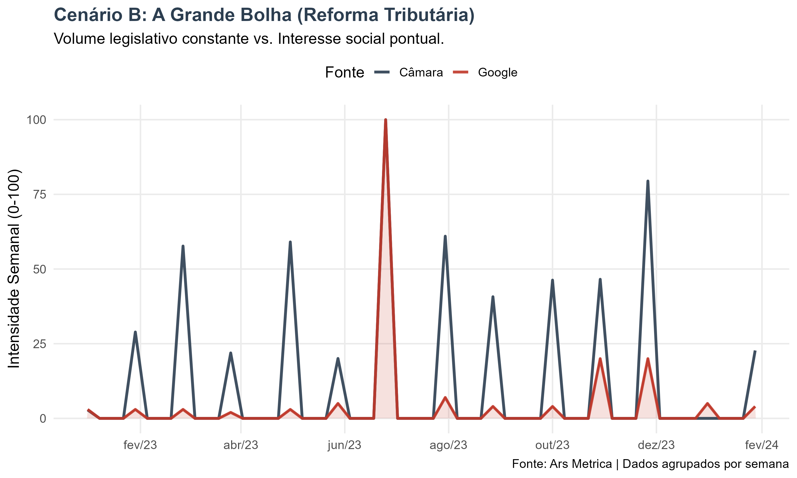

Discurso Parlamentar vs. Interesse Digital: Medindo a Sincronia Política
English Abstract (Click to Expand)
Parliamentary Discourse vs. Digital Interest: Measuring Political Synchrony
Do politicians truly listen to society? To answer this, I built the Political Seismograph, a data pipeline in R that correlates Parliamentary Discourse (Supply) with Google Trends search volume (Demand). By analyzing thousands of speeches from the Brazilian Chamber of Deputies, I tested the “representation hypothesis” across three distinct archetypes of public issues.
Key Findings:
- The Survival Mode (Crisis): During the Covid CPI investigation (2021), political speech and public interest were strongly correlated (r=0.73), with a balanced intensity ratio of 1.11.
- The Technical Mode (Structural Reform): On complex topics like Tax Reform (2023), Congress worked autonomously, producing 3.5x more content than the public demanded.
- The Noise Mode (Culture War): On moral issues like “Gender Ideology” (2022), there was zero correlation (r=-0.08), indicating a “dialogue of the deaf” where speech serves only as position-taking for partisan bases.
Destaques da Análise
- Em Crises (CPI): Alta correlação (r=0.73) e volume equilibrado entre discurso e busca.
- Em Reformas (Tributária): O Legislativo produz 3,5x mais conteúdo do que a demanda de busca.
- Em Pautas Morais (Ideologia): Correlação nula (r=-0.08), indicando agendas paralelas.
O Descompasso da Atenção
Existe uma métrica capaz de definir quando o Congresso Nacional e a sociedade estão, de fato, focados no mesmo assunto?
Na Ciência Política, a teoria do Agenda Setting discute historicamente quem pauta quem: é a mídia que pauta o político? É o político que pauta o público? Com a digitalização, ganhamos uma nova camada: a atenção direta do cidadão, medida pelos seus rastros de busca.
Para auditar essa relação com dados, desenvolvi o Sismógrafo Político. A ferramenta cruza duas bases de dados distintas para testar a hipótese da representação: 1. A Oferta (Legislativo): O volume de discursos proferidos na Câmara dos Deputados. 2. A Demanda (Digital): O volume de buscas no Google (uma proxy de curiosidade ou preocupação).
O objetivo não é julgar se o político “trabalha muito ou pouco”, mas entender a natureza da conexão: em quais momentos o “relógio de Brasília” acerta o passo com o tempo da sociedade?
Metodologia: Por que os gráficos têm este formato?
Antes de analisar os resultados, é preciso entender o “ritmo” dos dados.
A fala parlamentar obedece a uma sazonalidade rígida. A produção legislativa se concentra nas terças, quartas e quintas-feiras, caindo quase a zero nos fins de semana e recessos. Se plotássemos os dados diários brutos, veríamos um gráfico “nervoso”, cheio de picos e vales (formato “dente de serra”), que dificultaria a leitura.
Para corrigir isso e revelar a tendência real, nossa metodologia agrupa os dados semanalmente. As curvas suaves que você verá abaixo representam o volume consolidado de cada semana, eliminando o ruído diário e permitindo uma comparação limpa entre a pauta do Congresso e o interesse do Google.
Para garantir a robustez da análise, utilizamos o seguinte pipeline em R:
- Fonte Oferta (Câmara): Coleta diária de discursos via API, processados via NLP (n-grams).
- Fonte Demanda (Sociedade): Volume de busca no Google Brasil via
gtrendsR. - Métricas:
- Correlação (r): Sincronia temporal das curvas semanais.
- Índice de Intensidade Relativa (“Bolha”): Razão entre o volume de discurso e o volume de busca.
- Normalização: Escala Min-Max (0-100) para comparabilidade visual.
A Seleção dos Arquétipos
Para testar os limites dessa representação, selecionamos três “arquétipos” de problemas públicos baseados na literatura legislativa clássica:
- O Evento de Choque (Crise): Problemas urgentes e visíveis que exigem resposta imediata (“Fire Alarm”).
- A Pauta Estrutural (Reforma): Problemas complexos, de longo prazo, que exigem negociação técnica.
- A Pauta Simbólica (Guerra Cultural): Temas morais usados para sinalização de virtude (“Position Taking”).
Abaixo, testamos como o Sismógrafo se comporta em cada um desses cenários reais.
1. Alta Sincronia: O Caso da CPI da Covid
O primeiro teste analisou a CPI da Covid (2021). Este é o arquétipo da Crise.

- Correlação (r):
0.73(Alta) - Índice de Intensidade:
1.11(Equilíbrio)
Análise: O índice próximo de 1.0 indica um equilíbrio de atenção. Este é o modo de “Sobrevivência” do Legislativo: diante de uma crise visível, a reação institucional é imediata e proporcional à demanda por informação da sociedade. O político precisa falar para mostrar que está agindo.
2. Atividade Institucional: A Reforma Tributária
Ao analisarmos a Reforma Tributária (2023), vemos o arquétipo da Pauta Estrutural.

- Correlação (r):
0.69(Média) - Índice de Intensidade:
3.57(Discurso Preponderante)
Análise: O índice dispara para 3.57. A Câmara dedicou quase 4 vezes mais espaço a este debate do que a sociedade demonstrou interesse. Isso ilustra o papel da “Democracia Técnica”. Em pautas complexas (hard policy), o Legislativo atua de forma autônoma, ou “insulada”, mantendo o debate vivo para construir consensos difíceis, independente da pressão das ruas. O descolamento aqui não é uma falha, mas uma necessidade do processo legislativo.
3. Desconexão Temática: Ideologia de Gênero
Por fim, testamos a Ideologia de Gênero (2022), o arquétipo da Guerra Cultural.

- Correlação (r):
-0.08(Nula/Negativa) - Índice de Intensidade:
1.22
Análise: A correlação negativa sugere agendas paralelas. Os picos de discurso na Câmara não coincidem com os momentos de busca da sociedade. Isso é clássico do “Position Taking”: o discurso não visa informar ou debater uma política pública (policy), mas sim sinalizar valores para uma base eleitoral específica. O político fala para o espelho ou para sua claque, gerando ruído sem sincronia com a agenda pública geral.
Explore os Dados
Convido você a explorar outras combinações e testar suas próprias hipóteses no painel interativo do projeto:
Conclusão
O que podemos tirar desse experimento é que, tomando o interesse público medido pela proxy do Google e a agenda política medida pelos discursos, não há uma relação linear perfeita, mas sim uma relação complexa mediada pela natureza dos temas debatidos.
O Parlamento é uma máquina que opera em múltiplas rotações: ora como caixa de ressonância (Crises), ora como motor autônomo (Reformas), e ora como palco performático (Valores).
O próximo passo do Ars Metrica será expandir essa análise montando uma base histórica com os principais jornais do país, permitindo triangular: O que a Mídia publica, o que o Político fala e o que o Povo busca.
Para transparência e reprodutibilidade, o código utilizado neste estudo está disponível. Acesse o Repositório no GitHub